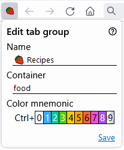

Lightning Tab Groups User Manual
Lightning Tab Groups is a lightweight Firefox tab group manager designed to be operated primarily from the keyboard. The users can quickly switch between tab groups by applying keyboard shortcuts that are valid while the extension popup window is open. All functionality of the add-on is also available through the built-in iShell command called tab-group. The command allows to operate on all tab groups simultaneously or only on the tabs selected by the filter. Please see iShell help for more details.
Firefox Customize Toolbar... menu allows to place the add-on action button at the beginning of the tab line as it is show in the image below:
Lightning Tab Groups works best when the "Open previous windows and tabs" option is enabled in the Firefox settings.
Lightning Tab Groups Popup Window
The extension popup window contains the list of available tab groups and provides access to the keyboard shortcuts used to perform tab group operations. It could be opened with the configurable Alt+G key combination.
Each row in the list displays the tab group access key, an icon of the tab group container (if assigned), the tab group name, and the total number of tabs/tab count in the current window.
Tab groups are listed in the order of their creation, although there is a setting that allows sorting them alphabetically. It is possible to move a tab group up or down with the Ctrl+↑/↓ keyboard shortcut.
Tab Group Mnemonics
Tab group mnemonic consists of the first letter of its name and the user-assigned color. The mnemonic allows to quickly determine which tab group is currently active.
To use a pictogram as a mnemonic, insert an emoji as the first character of your tab group name and assign the transparent color to the group (Ctrl+9, explained in the next section).
Creating, Editing and Deleting Tab Groups

To create a new tab group, open the extension popup window with Alt+G and press the Insert key. This will open the "Create tab group" form. In this form, you may specify the tab group name, the full name of its Firefox identity container (if required), and assign the mnemonic color with the Ctrl+<digit> key combination. Press Enter to save the tab group.
To edit an existing tab group, open the extension popup window with Alt+G, select the tab group with the arrow keys, and press Ctrl+Insert.
To delete a tab group, select it with the arrow keys and press Delete. This will also close all tab group tabs. The operation could be undone with the Ctrl+z key combination. The Ctrl+Delete keyboard shortcut only closes all tabs belonging to the selected tab group without deleting the tab group itself.
Switching Between Tab Groups
There are three ways to switch between tab groups: with the mouse, by selecting the necessary tab group with the arrow keys and pressing Enter, and directly with the access keys. For example, to switch to the Recipes tab group from the image above, press Alt+G to open the extension popup window and then press 3.
Displaying Tab Group Tabs
To display tabs belonging to a particular tab group, select it with the arrow keys and press → (arrow right). It is possible to filter tabs by title or URL. Press = (equals sign) to enter the filtering mode. Pressing ← (arrow left) will bring you back to the list of tab groups.
Moving Tabs Between Tab Groups
To move the currently active tab or tabs selected with Ctrl+<click> to another tab group, press Alt+G to open the extension popup window, select the destination tab group with the arrow keys, and press Home.
To move all tabs or tabs selected with Ctrl+<click> to another tab group, open the extension popup window, select the destination tab group, and press End.
Holding Ctrl while pressing Home or End will automatically switch you to the destination tab group.
To move several or all tabs to a separate browser window, select them with Ctrl+<click>, open the extension popup window, and press Shift+End.
Copying and Pasting Tab Groups
It is possible to copy and paste tab groups between different browser instances with the Lightning Tab Groups installed.
To copy a tab group, open the extension popup window, select it with the arrow keys, and press PageUp. Pres Shift+PageUp to copy all existing tab groups. Pressing PageDown while the popup window is open will paste the content of the clipboard.
Searching for Tabs
To search for tabs across all existing tab groups, open the extension popup window, press = (equals sign), and type the terms you want to search.
To switch to a tab from the search results list, select it with the arrow keys and press Enter, or just use Ctrl+<access key>.